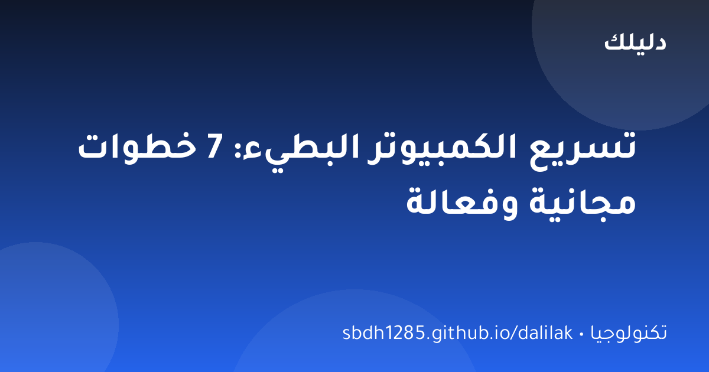

📱 تكنولوجيا
كيف تختار هاتفًا ذكيًا يناسب ميزانيتك؟ دليل المبتدئين
دليل عملي لاختيار الهاتف الذكي دون حيرة: المعالج، الذاكرة، الكاميرا، البطارية — وما الذي يستحق أن تدفع مقابله فعلًا.

لا شيء يثير الأعصاب مثل كمبيوتر يتجمد في أكثر اللحظات حرجًا. قبل أن تفكر في شراء جهاز جديد (وقبل أن تدفع مبالغ لبرامج «تحسين الأداء» التي غالبًا ما تكون عديمة الفائدة)، جرب هذه الخطوات السبع المجانية. في معظم الحالات ستلاحظ فرقًا كبيرًا خلال ساعة واحدة.
يبدو الاقتراح سخيفًا، لكنه الأكثر إهمالًا: الكمبيوتر الذي يعمل لأيام أو أسابيع دون إعادة تشغيل تتراكم فيه العمليات المتسربة من الذاكرة. إعادة تشغيل واحدة تنظف الذاكرة وتوقف كل العمليات العالقة. قاعدة ذهبية: أعد تشغيل جهازك مرة أسبوعيًا على الأقل.
السبب الأول لبطء الإقلاع هو عشرات البرامج التي تبدأ مع النظام دون أن تطلبها: مشغلات التحديث، أدوات الطباعة، ومزامنات الخدمات. افتح «إدارة المهام» (Ctrl+Shift+Esc) ثم تبويب «بدء التشغيل» وعطّل كل ما لا تحتاجه عند الإقلاع. ستندهش كم برنامجًا كان يعمل في الخفاء.
عندما يمتلئ القرص الصلب، يتباطأ النظام كله. استخدم أداة «تنظيف القرص» المدمجة في ويندوز لحذف الملفات المؤقتة وملفات التحديثات القديمة، وانقل الصور والفيديوهات إلى تخزين سحابي أو قرص خارجي. القاعدة: احتفظ بنسبة 15% على الأقل من مساحة القرص فارغة.
بعض أنواع البطء المفاجئ سببها برامج ضارة تستغل موارد جهازك. شغّل فحصًا كاملًا ببرنامج مكافحة الفيروسات المدمج (Windows Defender مجاني وممتاز)، وتأكد من تحديثه. إذا لاحظت إعلانات غريبة أو صفحات تفتح وحدها، فالفحص ضروري فورًا.
افتح «إدارة المهام» ورتب العمليات حسب استهلاك الذاكرة والمعالج. ستجد غالبًا متصفحًا يلتهم ذاكرة هائلة (كل تبويب برنامج مستقل!) أو برامج ثقيلة تعمل بلا فائدة. أغلق ما لا تحتاجه، واستخدم متصفحًا خفيفًا أو قلل عدد التبويبات المفتوحة.
تحديثات النظام لا تضيف ميزات فقط؛ كثير منها إصلاحات أداء وأمان. شغّل التحديثات التلقائية، وحذف البرامج القديمة غير المستخدمة (تجدها في «إضافة أو إزالة البرامج»). كل برنامج قديم تحذفه يخفف الحمل عن جهازك.
إذا كان جهازك ما زال بطيئًا بعد الخطوات السابقة، فغالبًا المشكلة في ذاكرة RAM قليلة أو قرص HDD تقليدي. ترقية الذاكرة إلى 8 جيجابايت على الأقل، أو استبدال القرص التقليدي بقرص SSD، تحوّل أي جهاز قديم إلى جهاز جديد تقريبًا، بتكلفة أقل بكثير من شراء كمبيوتر جديد.
الكمبيوتر البطيء في أغلب الحالات لا يحتاج استبدالًا، بل عناية: إعادة تشغيل منتظمة، برامج بدء تشغيل مضبوطة، ومساحة قرص نظيفة. جرب الخطوات السبع بهذا الترتيب، وستوفر على نفسك مبلغ جهاز جديد، وتحصل على أداء يرضيك.
نظّف ملفات التخزين المؤقت شهريًا، وراجع البرامج التي تعمل عند الإقلاع، وحدّث النظام. قرص SSD أسرع بكثير من القرص التقليدي. الإبقاء على مساحة حرة كافية على القرص يمنع البطء المفاجئ.
دليل عملي لاختيار الهاتف الذكي دون حيرة: المعالج، الذاكرة، الكاميرا، البطارية — وما الذي يستحق أن تدفع مقابله فعلًا.

حماية حساباتك أسهل مما تظن: كلمات مرور قوية، التحقق بخطوتين، والتعرف على الاحتيال — دليل عملي بأمثلة واضحة.

الذكاء الاصطناعي في كل مكان حولك: شرح مبسط بالعربية لما هو الذكاء الاصطناعي، كيف يتعلم، وأمثلة من حياتك اليومية.